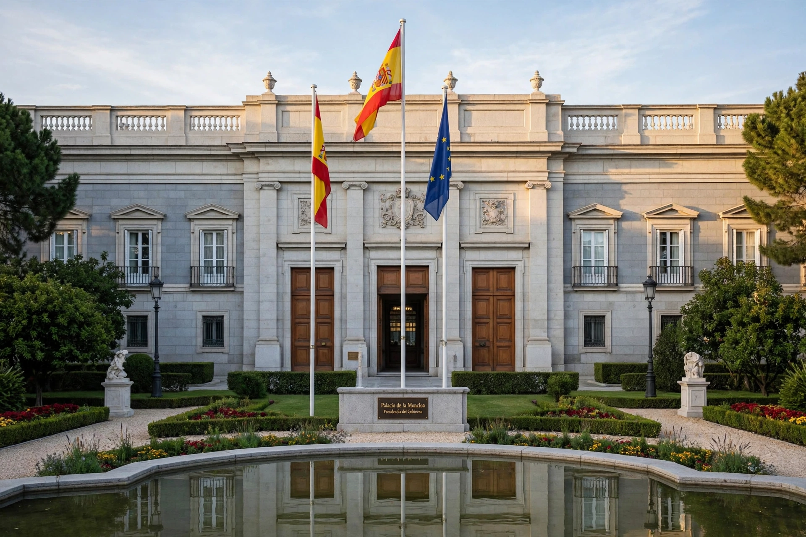

The Prime Minister of Spain, officially the President of the Government (Presidente del Gobierno), is the head of government of Spain. The office was established in its modern form by the Constitution of 1978.
After a general election, the monarch, after consulting party leaders, nominates a candidate who seeks investiture by an absolute majority in the Congress of Deputies on a first ballot, or a simple majority on a second ballot two days later. The prime minister is formally appointed by the king and countersigns many royal acts.
The prime minister directs the government, proposes ministers for appointment and dismissal by the king, can advise dissolution of the Cortes Generales, and may call referendums with royal sanction. The government is collectively responsible to Congress, which can remove it only by a constructive vote of no confidence naming a successor — a mechanism used successfully in 2018, when Pedro Sánchez of the Spanish Socialist Workers' Party replaced Mariano Rajoy.
Predecessors included the Secretary of State in the 18th century and the President of the Council of Ministers from 1834. Adolfo Suárez led the transition to democracy after Franco and became the first democratic prime minister under the 1978 settlement, followed by Leopoldo Calvo-Sotelo, Felipe González (1982–1996), José María Aznar, José Luis Rodríguez Zapatero, Mariano Rajoy, and Pedro Sánchez.